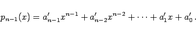
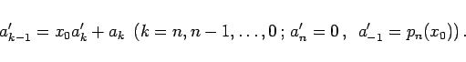
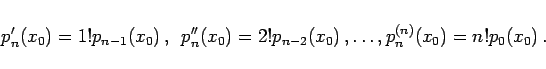
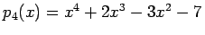
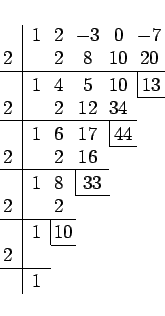
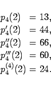

Inhalt Index DeskTop Bronstein

 Numerische Mathematik Numerische Lösung nichtlinearer Gleichungen Lösung von Polynomgleichungen Horner-Schema
Numerische Mathematik Numerische Lösung nichtlinearer Gleichungen Lösung von Polynomgleichungen Horner-Schema


Zur Berechnung des Funktionswertes pn(x) eines Polynoms n-ten Grades an der Stelle x = x0 aus seinen Koeffizienten geht man von der Beziehung
aus, wobei pn-1(x) ein Polynom vom Grade n-1 ist:
|  | (19.13) |
Durch Koeffizientenvergleich in (19.12) bezüglich xk erhält man die Rekursionsformel
|  | (19.14) |
Auf diese Weise werden aus den Koeffizienten ak von pn(x) die Koeffizienten ak' von pn-1(x) sowie der gesuchte Funktionswert pn(x0) bestimmt. Durch Wiederholung dieser Vorgehensweise, d.h., im nächsten Schritt wird das Polynom pn-1(x) mit dem Polynom pn-2(x) gemäß
| pn-1(x) = (x-x0)pn-2(x)+pn-1(x0) | (19.15) |
Aus dem Schema (19.16) liest man pn(x0) unmittelbar ab. Darüber hinaus gilt:
|  | (19.17) |
| Beispiel |
|
. Der Funktionswert und die Ableitungswerte von p4(x) an der Stelle x0 = 2 sind gemäß (19.16) zu berechnen. 

|
Hinweis: Das HORNER-Schema läßt sich auch für komplexe Koeffizienten ak durchführen, indem man für jeden Koeffizienten eine reelle und eine imaginäre Spalte gemäß (19.16) berechnet.